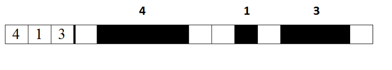

Не так давно Адалтик узнал, что такое японский кроссворд. Японский кроссворд — это изображение, представляемое таблицей размера a × b квадратных клеток, каждая из которых имеет либо белый, либо черный цвет. Слева от строк и сверху от столбцов располагаются числа, которые шифруют данную строку или столбец. Количество чисел показывает, сколько групп чёрных клеток находятся в соответствующей строке или столбце, а сами числа — сколько идущих подряд чёрных клеток содержит каждая из этих групп (подробнее про японский кроссворд можно прочесть в Википедии по ссылке https://ru.wikipedia.org/wiki/Японский_кроссворд).
Адалтик счел общий случай японского кроссворда слишком сложным и нарисовал строку из n клеток (то есть японский кроссворд размера 1 × n), которую он хочет зашифровать числами так же, как в японском кроссворде.
Пример шифрования одной строки японского кроссворда. Помогите Адалтику найти числа, шифрующие нарисованную им строку кроссворда.
В первой строке содержится целое положительное число n (1 ≤ n ≤ 100) — длина строки. Во второй строке содержится строка, состоящая из n символов 'B' или 'W', ('B' соответствует черной клетке, 'W' — белой клетке в строке, нарисованной Адалтиком).
В первой строке должно содержаться целое неотрицательное число k — количество чисел, шифрующих строку, то есть количество групп черных клеток в строке.
Во второй строке должно содержаться k целых чисел, шифрующих строку, то есть соответствующих размерам групп последовательных черных клеток в порядке слева направо.3
BBW
1
2
5
BWBWB
3
1 1 1
4
WWWW
0
4
BBBB
1
4
13
WBBBBWWBWBBBW
3
4 1 3
Примечание Последний пример из условия соответствует рисунку из условия.